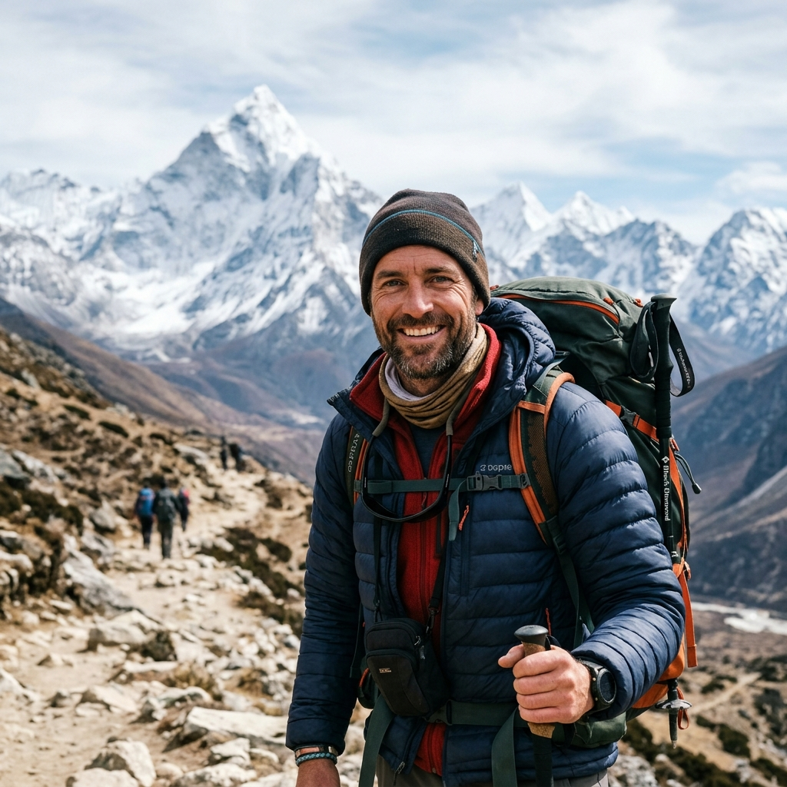
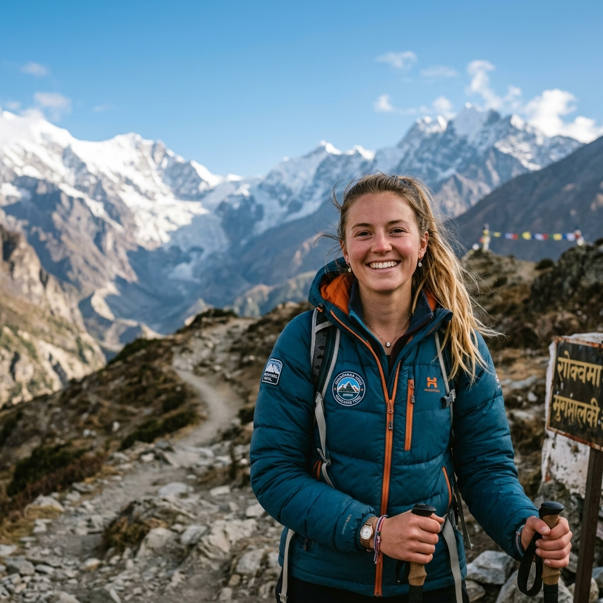
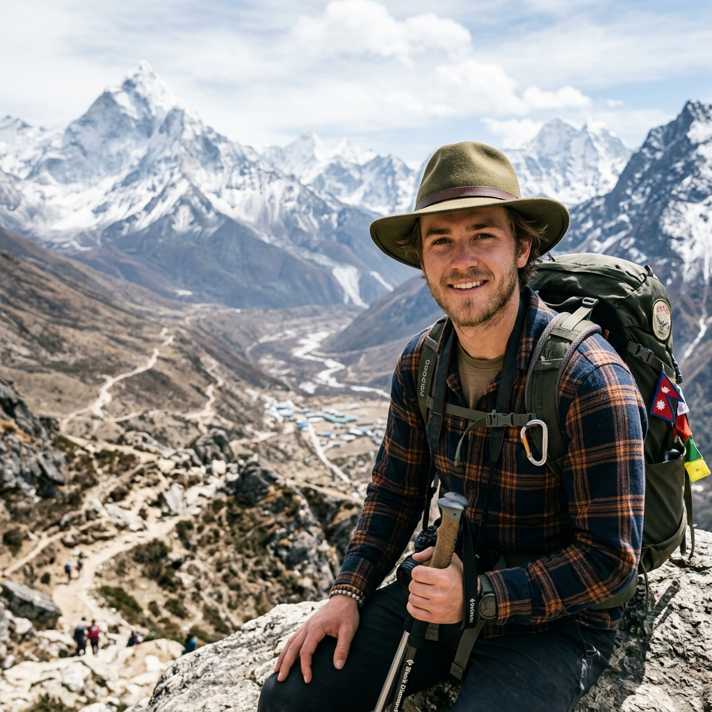
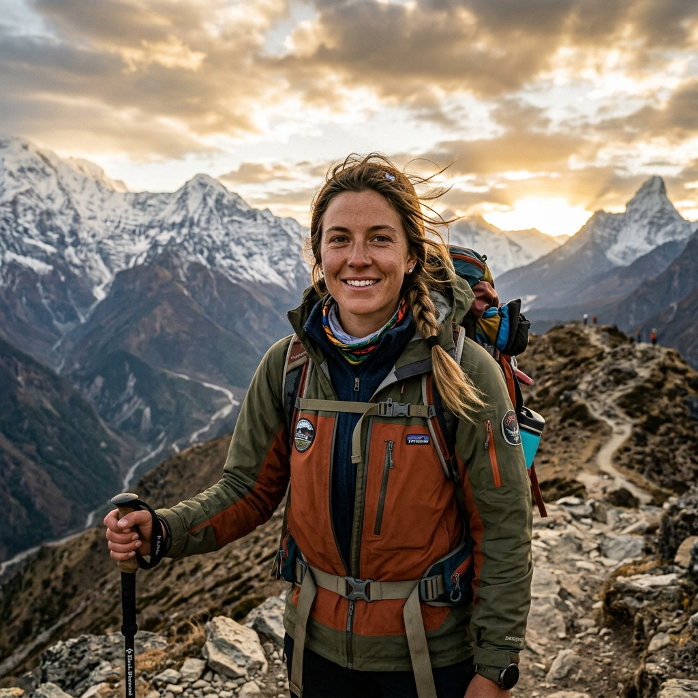

Our Everest Base Camp trek with Namaste Hiking Trek went beyond every expectation we had. What first pulled us towards them was their strict safety protocol and personal care. From the landing at Lukla to reaching Everest Base Camp (5,364m) and Kala Patthar, Sagar and the team made sure we were comfortable, safe, and hydrated every single day!
Everest Region • Classic Himalayan Expedition
5.0
reviews on TripAdvisor
5.0
169 reviews on Google
Everest Base Camp Trek
Embark on a legendary 14-day journey to the foot of Mount Everest. Traverse spectacular suspension bridges, hike through vibrant Sherpa villages, visit the historic Tengboche Monastery, and stand on the iconic Khumbu Glacier at Everest Base Camp (5,364m) before watching a golden sunrise from Kala Patthar (5,545m).

Travelers' Choice
Best of the Best 2026


Key Trip Facts
Duration
14 days
Difficulty
Moderate
Max Altitude
5,545 m
Destination
Nepal
Activity
Trekking
Accommodation
Hostels & Guesthouses
Transport
Both way Flight
Meals
B.D.L.
Season
Sep-October & Mar-May
Trek Starts
Lukla
Trek End At
Lukla
Trek Region
Everest
Package Start Point
Kathmandu
Package End Point
Kathmandu
Trek Overview
The Everest Base Camp Trek is a high-altitude journey through the heart of Nepal’s Khumbu region, taking you from the mountain gateway of Lukla through Sherpa villages, Buddhist monasteries, glacial valleys and some of the most recognizable Himalayan scenery in the world. The classic route leads through Phakding, Namche Bazaar, Tengboche, Pangboche, Dingboche, Lobuche and Gorak Shep before reaching Everest Base Camp at 5,364 m (17,598 ft) and ascending Kala Patthar at about 5,545 m (18,192 ft) for the clearest panoramic view of Mount Everest.
This is a trek to Everest Base Camp, not a climb of Mount Everest. The summit of Everest stands at 8,848.86 m, while the trek takes you into the high Himalayan environment beneath the world's highest mountain. From Base Camp, Everest itself is partly hidden by the surrounding peaks, particularly Nuptse. The classic Everest view comes from Kala Patthar, where Everest, Lhotse, Nuptse, Pumori, and other Himalayan giants form the skyline.
The journey is as much about reaching the destination as it is about experiencing the landscape and communities along the way. You cross suspension bridges over the Dudh Koshi, enter Sagarmatha National Park, walk through rhododendron and alpine landscapes, pass mani walls and prayer wheels, and spend nights in locally operated mountain teahouses. At Namche Bazaar, the traditional trading centre of the Khumbu, and Tengboche, home to one of the region's best-known Buddhist monasteries, the trail becomes a meeting point between Himalayan nature, Sherpa culture and modern trekking life. Sagarmatha National Park is also a UNESCO World Heritage Site, recognized for its exceptional mountain, glacier, and valley landscapes and its close connection with Sherpa culture.
The standard Everest Base Camp trekking itinerary takes around 12–14 days from Lukla and back, depending on the route and logistics. A well-paced itinerary includes dedicated acclimatization in Namche Bazaar and Dingboche rather than treating the trek as a race to Base Camp. Nepal Tourism Board describes the classic route as a roughly two-week journey beginning and ending at Lukla, with acclimatization around Namche and Dingboche before the trail continues toward Lobuche, Gorak Shep and Everest Base Camp.
What the Everest Base Camp Trek is really like?
Expect approximately 5–7 hours of walking on most trekking days, with a combination of gradual trails, stone steps, suspension bridges, steep climbs and long descents. The terrain is not technical mountaineering, but the altitude makes ordinary walking considerably more demanding. The challenge increases as you move above Namche, particularly on the approach to Lobuche, Gorak Shep and Kala Patthar.
You do not need to be an elite athlete or experienced mountaineer to undertake an EBC hike. You do, however, need enough endurance to walk for several consecutive days at altitude, cope with uneven Himalayan terrain and follow a gradual acclimatization schedule. Fitness helps with the physical demands, but altitude adaptation cannot simply be replaced by fitness. That is why the itinerary deliberately builds in acclimatization and why your pace should become slower rather than faster as you gain elevation.
Altitude is one of the defining characteristics of this trek. You begin around 2,860 m at Lukla and eventually sleep above 5,000 m at Gorak Shep, with Kala Patthar taking you substantially higher for the day. Symptoms of altitude sickness can become a serious concern above 3,000 m, so hydration, gradual ascent, adequate rest and immediate communication with your guide about unusual symptoms are essential. Nepal Tourism Board specifically advises high-altitude trekkers to understand Acute Mountain Sickness, avoid alcohol above 3,000 m and follow designated routes and responsible trekking practices.
From Lukla to Everest Base Camp
For the classic route, the adventure starts with the journey to Lukla, often described as the gateway to the Everest region. From Lukla, the trail follows the Dudh Koshi valley toward Phakding and Monjo, then climbs toward Namche Bazaar. After acclimatizing around Namche, the route continues toward Tengboche and Dingboche, where the forest gradually gives way to a stark alpine environment.
Beyond Dingboche, the landscape becomes increasingly dominated by rock, moraine, glaciers and high mountain walls. The trail passes Lobuche and the Thukla memorials before reaching Gorak Shep, the final settlement before Everest Base Camp. From here, trekkers make the excursion to Base Camp and, depending on the itinerary and conditions, climb Kala Patthar for the defining Everest viewpoint. The Nepal Tourism Board identifies this sequence; Lukla, Namche, Tengboche, Dingboche/Pheriche, Lobuche, Gorak Shep, Everest Base Camp and Kala Patthar as the classic Everest Base Camp route.
More than a mountain trek
One of the reasons the EBC Trek in Nepal remains so distinctive is that the mountain scenery is inseparable from the people and culture of the Khumbu. Sherpa settlements, Buddhist monasteries, chortens, prayer flags, mani walls and teahouses are part of the route rather than attractions added around it. UNESCO describes the Sherpa cultural heritage of Sagarmatha as an integral part of the area's outstanding natural and cultural value.
You will also encounter an extraordinary Himalayan panorama throughout the route, including Ama Dablam, Thamserku, Kangtega, Lhotse, Nuptse, Pumori, Lobuche, Cholatse, Island Peak and Everest. The scenery changes dramatically from green river valleys and pine-rhododendron forests near Lukla to the exposed moraine and glacier landscapes above the tree line.
Is the Everest Base Camp Trek right for you?
The answer depends less on whether you have climbed mountains before and more on whether you are prepared for sustained walking, high altitude, basic mountain accommodation and changing weather.
The trek is a strong choice for first-time high-altitude trekkers who are willing to prepare properly and follow an acclimatization-focused itinerary. Experienced hikers may find the terrain familiar but should still respect the altitude. Families, older trekkers and solo travelers can also undertake the journey with appropriate preparation and professional support.
For foreign trekkers, the Nepal Tourism Board currently lists the Everest Base Camp Trek among the Everest-region routes requiring a licensed trekking guide and agency-issued TIMS card under the revised TIMS provisions.
A responsible EBC itinerary therefore prioritizes gradual altitude gain, acclimatization, realistic daily walking times, appropriate equipment, reliable local logistics and contingency planning rather than simply reaching Base Camp as quickly as possible.
The result is not just a hike to a famous location. It is a journey through the Khumbu Valley and Sagarmatha National Park, combining high-altitude trekking, Himalayan scenery, Sherpa culture, Buddhist heritage and the experience of walking beneath Mount Everest.
Everest Base Camp Trek Highlights
The Everest Base Camp Trek is made up of far more than reaching a sign at 5,364 meters. The route brings together the high Himalayan landscapes of Sagarmatha National Park, Sherpa villages and Buddhist heritage, suspension bridges, glacial valleys, mountain viewpoints and the everyday experience of walking and staying in the Khumbu.
From the first steps out of Lukla to the final descent from the upper Khumbu, each section of the trail has its own character. These are the experiences that define the classic Everest Base Camp journey.
Stand at Everest Base Camp at 5,364 m
Reaching Everest Base Camp (5,364 m / 17,598 ft) is the defining achievement of the trek. From Gorak Shep, the trail follows the rugged landscape beside the Khumbu Glacier toward the base camp area. The terrain is rocky and uneven, and at more than 5,000 meters even a relatively short walk requires patience and controlled pacing. At Base Camp, you are surrounded by the enormous walls of Nuptse, Lhotse, Pumori and Khumbutse, with the Khumbu Icefall rising ahead. During the spring climbing season, expedition teams establish camps here as they prepare for attempts on Everest. Outside the climbing season, the landscape can be much quieter. One important detail surprises many first-time trekkers: you do not get the classic unobstructed summit view of Everest from Base Camp itself. That is one reason Kala Patthar is such an important part of the itinerary.
Climb Kala Patthar for the classic Everest view
Kala Patthar, approximately 5,545 m (18,192 ft), is usually the highest point reached on the classic Everest Base Camp itinerary and one of the most important viewpoints in the Khumbu. The climb begins from Gorak Shep and follows a steep, rocky trail toward the summit ridge. At this elevation, the distance is less important than the thin air, so your guide will set a deliberately slow pace. From Kala Patthar, the panorama opens toward Mount Everest, Nuptse, Lhotse, Pumori, Lingtren and other Himalayan peaks. It is this viewpoint that produces the familiar close mountain perspective most travelers associate with Everest trekking. Nepal Tourism Board also identifies Kala Patthar as a renowned viewpoint for views of Mount Everest. Depending on weather, visibility and the itinerary, the ascent may be timed for sunrise or another favorable period of the day. Your guide can adjust the timing according to conditions rather than treating the viewpoint as a fixed schedule.
Fly into Lukla, the gateway to the Everest region
The classic EBC route begins with the journey to Lukla, widely known as the gateway to the Everest region. From Lukla, the trail descends and follows the Dudh Koshi valley toward Phakding and eventually Namche Bazaar. The mountain flight is therefore not merely transportation; it marks the transition from Kathmandu and Nepal's lower elevations into the Himalayan trekking environment. The flight schedule is subject to operational and weather conditions, so trekkers should treat the Lukla sector as part of the expedition logistics and allow contingency time when planning international flights. Nepal Tourism Board identifies Lukla as the traditional starting and finishing point for the approximately two-week classic Everest Base Camp trek.
Cross suspension bridges over the Dudh Koshi
The trail between Lukla, Phakding and Namche Bazaar follows one of the most memorable river valleys in the Khumbu. You cross multiple suspension bridges above the Dudh Koshi River and its tributaries, often decorated with Buddhist prayer flags. The bridges rise above deep Himalayan gorges, while the river continues below through the valley. The approach to Namche becomes particularly dramatic as the trail crosses bridges around Jorsale and the Sagarmatha National Park entrance before beginning the sustained climb toward Namche Bazaar. Nepal Tourism Board specifically identifies the Dudh Koshi route and suspension bridge section as part of the classic approach to Namche. For first-time trekkers, these crossings are often one of the first moments when the scale and terrain of the Everest region become unmistakable.
Enter Sagarmatha National Park
A major part of the Everest Base Camp experience takes place inside Sagarmatha National Park, the protected Himalayan landscape surrounding Mount Everest. The park contains dramatic mountains, glaciers and deep valleys and was inscribed as a UNESCO World Heritage Site in 1979. It is also notable because its natural environment is closely intertwined with the culture and settlements of the Sherpa communities who have lived in the Khumbu for generations. As the trail climbs, the environment changes noticeably. Lower elevations contain pine, hemlock and rhododendron forests, while higher elevations transition toward fir, birch, juniper, alpine vegetation, rock, ice and glacial terrain. This ecological progression is one of the less obvious but most rewarding highlights of the EBC hike: you physically watch the landscape change as you gain altitude.
Acclimatize around Namche Bazaar
Namche Bazaar is much more than an overnight stop. The horseshoe-shaped settlement is one of the principal commercial and trekking centres of the Khumbu and an important stage in the acclimatization process. Nepal Tourism Board recommends spending time around Namche rather than rushing through it, with surrounding destinations such as Syangboche, Khumjung and Khunde providing options for acclimatization walks. A properly paced itinerary uses this time to let your body adapt to increasing elevation. Rather than spending an acclimatization day completely inactive, you normally make a controlled hike to a higher elevation and return to Namche to sleep. This is also where the trekking experience becomes more culturally immersive. You will find Sherpa-owned lodges, bakeries, trekking shops, cafés, prayer wheels and views extending toward the surrounding peaks.
Experience Sherpa culture in the Khumbu
The Everest Base Camp Trek takes you through the homeland of the Sherpa people, making the journey both a Himalayan trekking experience and a cultural journey. The Sherpa presence is visible throughout the route in the architecture of villages, Buddhist monasteries, prayer flags, mani walls, agriculture, hospitality and the people who operate many of the region's trekking services. UNESCO considers the relationship between the Sherpa culture and the natural environment of Sagarmatha National Park an important part of the area's outstanding universal value. Rather than treating Sherpa culture as something to observe from outside, the EBC trek allows you to encounter it within the communities through which you travel.
Visit Tengboche Monastery beneath Ama Dablam
The trail from Namche toward Tengboche is one of the most scenic sections of the route, with the landscape opening toward Ama Dablam, Thamserku, Kangtega, Lhotse and Everest. At Tengboche, the physical landscape meets the spiritual character of the Khumbu. Tengboche Monastery is one of the region's best-known Buddhist centres and is particularly famous for its dramatic setting below Ama Dablam. The monastery is also associated with Mani Rimdu, an important Buddhist festival held annually. When monastery activities are open to visitors, your guide can explain the appropriate etiquette. Religious sites along the trail are functioning places of worship, so respectful behavior is more important than treating them simply as photographic attractions.
Walk through forests and into the alpine zone
One of the most satisfying aspects of the Everest Base Camp hiking route is its changing vegetation. The lower trail around Lukla and Phakding passes through greener environments with forests and river valleys. As you climb through Namche and Tengboche, rhododendron, pine, birch and fir forests become part of the landscape. Above the tree line, the environment changes dramatically. Around Dingboche, Lobuche and Gorak Shep, the scenery becomes increasingly exposed, with stone-walled fields, alpine valleys, barren slopes, moraine and glaciers replacing dense forest. The change makes the altitude tangible. You do not simply gain elevation on a map; you enter a completely different ecological and visual environment.
See Ama Dablam and the Himalayan giants from changing perspectives
Everest may be the name on the itinerary, but the journey gives you views of an entire Himalayan mountain system. Depending on the section of the route and visibility, you can see:
The mountains do not look the same throughout the trek. Ama Dablam dominates views from the Imja Valley and Tengboche area, while the upper Khumbu opens toward Pumori, Nuptse, Lhotse and Everest. From Kala Patthar, these peaks form a much more concentrated high-Himalayan panorama. That changing perspective is part of what makes the route visually rewarding from beginning to end.
Walk beside the Khumbu Glacier
Above Dingboche, the terrain increasingly reflects the influence of the Khumbu Glacier. The trail toward Lobuche follows sections of the glacier's lateral moraine before continuing toward Gorak Shep. From here, the route to Base Camp crosses rugged glacial terrain surrounded by enormous mountain walls. This section feels very different from the lower trekking trail. There are fewer trees, less shelter from wind and much greater exposure to altitude. The terrain is rocky and irregular, so every step needs more attention. Nepal Tourism Board describes Lobuche as sitting on the lateral moraine of the Khumbu Glacier and identifies the final approach from Gorak Shep across the glacier environment toward Everest Base Camp.
Stay in mountain teahouses
The teahouse experience is an important part of what makes the Everest Base Camp Trek different from a standard mountain tour. Instead of camping every night, trekkers generally stay in locally operated teahouses and lodges along the established route. Rooms are simple, while the dining room becomes the social centre of the evening. After several hours on the trail, this is where the experience often becomes surprisingly personal: sharing dal bhat, momos, soup or noodles, warming up around a stove, playing cards, talking with fellow trekkers and listening to stories from guides and porters. Facilities become progressively more basic as altitude increases. Hot showers, charging and internet connectivity may be available for additional fees, while higher settlements offer fewer conveniences than Namche or Lukla. The simplicity is part of the experience. You are not trekking through the Khumbu to reproduce the comforts of a city hotel, you are spending the night inside a Himalayan trekking community.
Look for Himalayan wildlife
Sagarmatha National Park is an important Himalayan wildlife habitat, although sightings are naturally unpredictable. The park supports species including Himalayan tahr, musk deer, ghoral, pika and other high-altitude wildlife, while more than 100 bird species have been recorded, including the danphe (Himalayan monal). The higher-profile species of the park include the snow leopard, but seeing one during an EBC trek would be exceptionally rare. A more realistic wildlife experience is spotting Himalayan birds or tahr in quieter areas away from busy trekking sections. Early starts, careful observation and respect for wildlife give you the best opportunity to notice animals without disturbing them.
Experience the quiet moments between the major landmarks
Not every highlight of the EBC trek appears on a map. It can be the first cup of hot tea after climbing a steep section above Namche. It can be watching clouds move around Ama Dablam from a teahouse courtyard. It can be learning a Nepali or Sherpa greeting from your guide, sharing stories around the dining-room stove or looking back down the valley after a long ascent. These moments matter because the Everest Base Camp Trek is a multi-day journey, not a single attraction. The experience builds gradually: one village, one ridge, one monastery, one bridge and one mountain view at a time.
Complete the journey safely as a team
The final highlight is reaching the high Khumbu while respecting what the altitude demands. A successful Everest Base Camp trek is not about walking fastest or proving that you can ignore fatigue. It is about steady pacing, acclimatization, hydration, nutrition, appropriate gear and communicating openly with your guide when something does not feel right. The classic itinerary deliberately gives trekkers time to acclimatize around Namche Bazaar and Dingboche before continuing toward Lobuche and Gorak Shep. This gradual approach is particularly important because altitude-related illness can affect people regardless of age, fitness or previous trekking experience.
The strongest trekking experience is therefore not simply: Lukla → Base Camp → back to Lukla.
It is: Lukla → Khumbu Valley → Sherpa culture → Namche → Tengboche → Dingboche → high Himalaya → Gorak Shep → Everest Base Camp → Kala Patthar → return. That combination of mountain scenery, altitude, culture, glaciers, wildlife, Buddhist heritage and human endurance is what makes the Everest Base Camp Trek one of Nepal's defining trekking experiences.
At a glance: the highlights you will experience
Everest Base Camp: Reach the legendary expedition base at 5,364 m.
Kala Patthar: Climb to approximately 5,545 m for the classic close-up panorama of Everest.
Lukla: Begin the classic trek through the traditional gateway to the Everest region.
Dudh Koshi suspension bridges: Cross dramatic Himalayan river gorges beneath prayer flags.
Sagarmatha National Park: Trek through a UNESCO World Heritage landscape of mountains, glaciers, valleys, wildlife and Sherpa culture.
Namche Bazaar: Acclimatize in the Khumbu's best-known Sherpa trading and trekking centre.
Tengboche Monastery: Experience one of the most important Buddhist sites on the Everest trekking route beneath Ama Dablam.
Khumbu Glacier: Walk through the rugged glacial landscape surrounding Lobuche, Gorak Shep and Everest Base Camp.
Himalayan wildlife: Look for Himalayan tahr, danphe and other species within Sagarmatha National Park.
Teahouse life: Experience locally operated mountain lodges, traditional food, shared dining rooms and genuine trail companionship.
Sherpa culture: Encounter the communities, Buddhist traditions and mountain lifestyle that make the Khumbu culturally distinctive.
The journey itself: Spend nearly two weeks moving from green river valleys into the high Himalaya beneath Mount Everest.
Why Book the Everest Base Camp Trek with Namaste Hiking Trek?
Most operators in Kathmandu can get you to base camp. The difference is in what happens around the trek — before you arrive, during the harder days, and when something doesn’t go to plan. These are the things our guests from across the world keep writing about in their TripAdvisor reviews as what actually mattered to them. We’re currently ranked #2 out of more than 2,900 trekking agencies in Nepal on TripAdvisor — a position we don’t take lightly, and one that comes from genuinely hard work on every single trip rather than marketing.
Guides who've worked the Khumbu for 6 to 7 years with us
not seasons, years. Sujan, Sharad, Bishal, Sandip, Biraj, Prem — these names appear over and over in our reviews because they’re the same faces returning every season. They know which teahouses cook the best Dal Bhat in Dingboche, which days the Tengboche puja is open, and which trekkers need slowing down before anyone says it out loud. Make sure you read our reviews before booking the trek
100% guaranteed departures
Every date on our calendar runs, with no minimum group size required. If you book a solo private trek, it still runs as a solo private trek. We don’t cancel you off a date because the numbers didn’t work out.
You see your group before you arrive
Through our client portal you can check who else is on your departure — names, ages, countries — so there’s no awkward first meeting in the office. Most of our group trekkers message each other on WhatsApp before they fly out.
A real pre-trek briefing at the office
You sit down at our office in NayaBazar with your guide and walk through the route, altitude protocol, packing check, weather forecast, and anything else on your mind. It’s usually 60 to 90 minutes. Most clients tell us this is where the trip stops feeling abstract.
24/7 replies from real people you'll meet
Lal, Kamal and Hemlal handle pre-trek messages personally — not a chatbot, not a shift worker. On WhatsApp during Nepal hours we usually reply within minutes; overnight, within a few hours. Once you’re on the trail, your guide carries a working SIM and we can be reached through them.
Private airport pickup and drop-off, included
A driver with a name card of Namaste Hiking Trek meets you at Tribhuvan International, takes you to your hotel, and the same arrangement gets you back at the end. No queueing for a prepaid taxi after a 14-hour flight.
Sleeping bag and down jacket rentals at the office
USD 15 each for the trip. Trekking poles, crampons, and other gear available to buy at reasonable prices. If you arrive with nothing but boots, we can have you fully kitted out the morning before departure.
Complimentary Namaste Hiking Trek-branded waterproof duffle bag
when you book with a porter (returned after the trek). It’s sized to fit the 20 kg porter weight limit so you don’t have to think about packing geometry.
A booking system that doesn't bury you in emails
Book and pay by card, upload your passport scan, insurance PDF, and flight details directly through app.namastehikingtrek.com. Update your inbound flight up to the day before — you don’t have to email us each time something changes. We built it ourselves around how we actually run trips, and it’s the piece of our operation we’re most quietly proud of.
24/7 emergency support from a local team that picks up
When something goes wrong on the trail — a sudden altitude issue, a teahouse mix-up, a flight cancellation back home you need to work around — you don’t wait. Message us on WhatsApp and someone in our Kathmandu office picks it up immediately, day or night. Because we’re local, we can act on it the same hour: re-route, re-book, send a horse, arrange a helicopter — whatever the situation actually needs.
Everest Base Camp Trek Itinerary: Day by Day Details
Our detailed 14-day itinerary is designed to maximize safety and acclimatization, ensuring you have the best possible chance of standing at the foot of the world's highest mountain. Review the daily hiking hours, elevation profiles, meals, and overnight stops below.
Day 1: Arrival at Tribhuvan International Airport in Kathmandu and transfer to hotel
Kathmandu – approximately 1,300 m / 4,265 ft
Transfer time: 20 to 30 minutes
Accommodation: Hotel
Activity: Pre-trek briefing, documents & gear check
Your Everest Base Camp adventure begins in Kathmandu, Nepal's capital and the main preparation point for the trek. After arriving at Tribhuvan International Airport, you will be transferred to your hotel in the Thamel area. This first day is deliberately easy. After a long international flight, you can rest, adjust to Nepal, walk around Thamel or take care of any final trekking requirements.
If you need equipment, trekking clothing, a SIM card, toiletries, snacks or other essentials, Kathmandu has a wide range of trekking shops and services. Later, you will attend your pre-trek briefing. This is where you meet your guide and, depending on the departure, your fellow trekkers. Your guide will explain the route day by day and discuss the practical realities of walking at altitude.
We will also check your essential trekking gear, luggage and documents before you leave for the Everest region. This is the point where the itinerary becomes more than an idea on your screen. Tomorrow, you leave the Kathmandu Valley and enter the Khumbu.
Overnight in Kathmandu.


Day 2: Kathmandu to Lukla and Trek to Phakding
Lukla – approximately 2,860 m / 9,383 ft | Phakding – approximately 2,600–2,650 m / 8,530–8,700 ft
Flight: approximately 25–40 minutes, depending on operating conditions
Trek: approximately 3–4 hours
Accommodation: Teahouse
Trek Distance: approximately 8.2 km / 5.1 miles
Today you travel toward Lukla, the traditional gateway to the Everest region. The mountain flight itself is a memorable part of the journey. As the aircraft leaves the Kathmandu area or the applicable departure airport, the landscape gradually changes from populated valleys and terraced hills to the steep Himalayan terrain surrounding the Khumbu.
Flight duration and departure arrangements can vary according to the operating airport and conditions. Because mountain aviation is weather-dependent, your actual flight timing may differ from the published schedule. After arriving at Lukla, you meet the rest of the trekking crew and begin walking.
The first section of the Everest Base Camp trekking route follows the Dudh Koshi valley through pine and other mountain vegetation, passing small Sherpa settlements, mani walls, chortens and prayer flags. The trail is comparatively gentle, making this an appropriate first walking day before the substantial climb toward Namche Bazaar.
You reach Phakding, a riverside settlement surrounded by green hills and mountain scenery. This first night is intentionally spent at a relatively lower elevation than Lukla's landing point, allowing you to begin the trek gradually.
Overnight in Phakding.


Day 3: Phakding to Namche Bazaar
Namche Bazaar – approximately 3,440–3,500 m / 11,286–11,483 ft
Trek: approximately 5–7 hours
Distance: approximately 10–12 km, depending on the exact route
Accommodation: Teahouse
Today the Everest Base Camp trek becomes more demanding. You follow the Dudh Koshi River through the lower Khumbu, crossing suspension bridges decorated with prayer flags before reaching Monjo and continuing toward the entrance to Sagarmatha National Park.
After the park checkpoint, the trail continues through Jorsale and eventually reaches the major suspension bridge crossing before the long climb toward Namche. Nepal Tourism Board describes this section as a gradual approach along the Dudh Koshi followed by a sustained ascent of around three hours toward Namche Bazaar.
The climb is steady rather than technical. You gain significant elevation in one day, so your guide will keep the pace controlled and allow regular breaks. As the trail rises through pine and rhododendron forest, the valley gradually opens behind you. On a clear day, you may catch one of your first distant views of the high Himalayan peaks.
Then Namche Bazaar appears ahead. Built into a curved mountainside, Namche is the principal trekking and trading centre of the Khumbu. You will find teahouses, bakeries, cafés, trekking shops and other services here.
More importantly, this is where your high-altitude acclimatization strategy begins. You spend the next two nights in Namche rather than continuing immediately toward Tengboche.
Overnight in Namche Bazaar.


Day 4: Acclimatization Day in Namche Bazaar
Namche Bazaar – approximately 3,440–3,500 m
Day hike: approximately 4–6 hours, depending on route and group condition
Accommodation: Teahouse
Acclimatization: Syangboche / Everest View Hotel / Khumjung / Khunde
Today is an acclimatization day, but that does not mean doing nothing. The principle is to gain elevation during the day and return to Namche to sleep. Your guide may take you toward Syangboche, the Everest View Hotel, Khumjung or Khunde, depending on weather, group condition and the day's objectives.
Nepal Tourism Board specifically identifies the villages and viewpoints around Namche as suitable areas for acclimatization walks. A typical day involves a slow uphill hike, regular hydration and plenty of time to observe how your body responds to the elevation.
You may also use the day to explore Namche itself, visit local cultural sites or simply rest in preparation for the higher sections. The important thing is not how far you walk. The objective is to give your body additional time to adjust before your sleeping altitude rises again.
This is also a good opportunity to discuss any headache, unusual fatigue, nausea, dizziness, difficulty sleeping or other symptoms with your guide. Altitude affects individuals differently, and being fit does not make someone immune to altitude-related illness. Return to Namche in the afternoon for a meal and an early night. Tomorrow, the trail continues toward Tengboche.
Overnight in Namche Bazaar.
Day 5: Namche Bazaar to Tengboche
Tengboche – approximately 3,860 m / 12,664 ft
Trek: approximately 5–6 hours
Accommodation: Teahouse
Highlight: Tengboche Monastery beneath Ama Dablam
The route from Namche to Tengboche is one of the most scenic sections of the Everest Base Camp trek.
The trail initially follows an open hillside above the Dudh Koshi valley, with views toward Thamserku, Kangtega, Ama Dablam, Lhotse and Everest when the weather is clear. After the relatively gentle traverse, the trail descends toward the Dudh Koshi before beginning the substantial ascent toward Tengboche.
The climb through forest is steady. As you gain elevation, rhododendron, pine and other Himalayan vegetation surround the trail, while the mountain panorama becomes increasingly dramatic. Eventually, the forest opens and Tengboche Monastery comes into view.
Tengboche is one of the most significant Buddhist centres in the Khumbu. The monastery is particularly famous for its setting with Ama Dablam rising behind it, and it is associated with the annual Mani Rimdu Buddhist festival.
When visitor access and religious activities permit, you can visit the monastery respectfully with guidance from your trekking team. The afternoon is also a good time to simply appreciate the setting. Tengboche is one of those places where the landscape and culture are inseparable.
Overnight in Tengboche.
Day 6: Tengboche to Dingboche
Dingboche – approximately 4,410 m / 14,468 ft
Trek: approximately 5–6 hours
Distance: approximately 10–12 km, depending on route
Accommodation: Teahouse
Today you move deeper into the high-altitude Everest region. The trail first descends through forest toward Deboche before crossing the Imja Khola and continuing toward Pangboche. The changing environment becomes obvious as you gain altitude. Dense forest gradually gives way to more open slopes, stone walls and alpine vegetation.
Pangboche is one of the prominent Sherpa settlements on this section of the route. From here, the trail continues through Shomare before entering the wider Imja Valley. As you approach Dingboche, you begin to see the agricultural adaptation of the high Himalaya: stone-walled fields protect crops from the wind and harsh conditions.
Surrounding peaks such as Ama Dablam, Lhotse, Island Peak and other Himalayan mountains dominate the skyline. The air is now noticeably thinner than it was in Namche. That is why Dingboche is not simply another overnight stop. You will spend two nights here and use the following day for a second dedicated acclimatization hike.
Overnight in Dingboche.
Day 7: Acclimatization Day in Dingboche
Dingboche – approximately 4,410 m / 14,468 ft
Acclimatization hike: approximately 3–6 hours, depending on route and conditions
Accommodation: Teahouse
Excursion: Nangkartshang / Nagarjun Hill viewpoint
This is the second major acclimatization day of the Everest Base Camp itinerary. The principle remains the same: climb higher during the day and return to Dingboche to sleep. Depending on weather, group condition and guide assessment, the hike may head toward Nangkartshang/Nagarjun Hill or another appropriate viewpoint around Dingboche.
The purpose is not to complete a particular peak at all costs. The goal is to expose your body to a higher elevation while preserving your ability to continue safely toward Lobuche and Gorak Shep. The views from the surrounding ridges can be exceptional. Looking across the Imja Valley, you may see Ama Dablam, Lhotse, Island Peak and other high Himalayan peaks, while the valley floor and stone-walled fields sit far below.
At this altitude, slow movement becomes essential. What would be an easy climb at sea level can feel surprisingly strenuous above 4,500 meters.
If your body is responding well, continue according to the planned acclimatization route. If you feel unwell, tell your guide immediately. The itinerary can be adjusted; reaching an arbitrary viewpoint is never more important than your health. Return to Dingboche for a substantial meal, hydration and rest.
Tomorrow, you leave the relative shelter of Dingboche and begin the approach toward the upper Khumbu.
Overnight in Dingboche.
Day 8: Dingboche to Lobuche
Lobuche – approximately 4,940 m / 16,200 ft
Trek: approximately 4–6 hours
Accommodation: Teahouse
Pass: Thukla Pass memorials
The trail changes dramatically today. Leaving Dingboche, you continue through the increasingly exposed upper Khumbu Valley, with the mountains surrounding the route appearing larger and closer.
The landscape becomes more austere as the tree line disappears. Stone, moraine and high mountain slopes replace the forests of the lower Khumbu. You eventually reach Thukla/Dughla, where the route climbs toward the memorial area at Thukla Pass.
The memorials commemorate climbers and Sherpas who died in the Himalaya and provide a quiet reminder that the mountains surrounding the trail are not simply scenic landmarks, they are serious high-altitude environments where mountaineering carries real risk.
From the memorial area, the trail continues along the moraine toward Lobuche. Lobuche is a small, exposed high-altitude settlement near the Khumbu Glacier. Accommodation is simpler here than in Namche or lower villages, and temperatures can fall sharply after sunset.
At almost 5,000 meters, you may notice a significant difference in appetite, breathing and sleep. Take the afternoon slowly. Eat as well as you can, remain hydrated, stay warm and report any concerning symptoms to your guide.
Tomorrow you enter the highest part of the trek.
Overnight in Lobuche.
Day 9: Lobuche to Gorak Shep and Kala Patthar
Gorak Shep – approximately 5,164 m / 16,942 ft | Kala Patthar – approximately 5,545 m / 18,192 ft
Trek: approximately 6–8 hours, depending on conditions and itinerary timing
Accommodation: Teahouse
Summit Viewpoint: Kala Patthar (~5,545 m / 18,192 ft)
This is one of the highest and most demanding days of the Everest Base Camp Trek.
From Lobuche, the trail follows the upper Khumbu toward Gorak Shep, the final settlement before Everest Base Camp. The terrain is now predominantly rocky and glacial, with enormous peaks including Pumori, Lingtren, Khumbutse and Nuptse surrounding the route.
Gorak Shep sits at approximately 5,164 m, making it the highest sleeping point on the standard itinerary. After arriving and taking an appropriate break, the itinerary continues with the climb toward Kala Patthar when conditions and group health allow.
Kala Patthar – approximately 5,545 m
The climb to Kala Patthar is physically demanding because of the elevation, not because it requires technical climbing. The trail rises steeply over rocky ground. Your guide will establish a slow pace, with frequent pauses according to the group's condition.
At approximately 5,545 m, the summit ridge provides the classic high-altitude perspective toward Mount Everest, Nuptse, Lhotse, Pumori, Lingtren and other Himalayan peaks.
This is one of the most important viewpoints of the entire trek. Everest Base Camp itself does not provide the same direct view of Everest's summit, which is why Kala Patthar is traditionally included in the classic route. Nepal Tourism Board specifically identifies Kala Patthar as the renowned viewpoint associated with the Everest panorama.
The timing can be adjusted according to weather and visibility. The objective is to reach the viewpoint when conditions provide the best balance between visibility, temperature, safety and daylight. After spending appropriate time at the viewpoint, descend carefully to Gorak Shep.
At this altitude, you should not linger unnecessarily in exposed conditions. Return to the teahouse, eat a warm meal, hydrate and prepare for the next morning's Base Camp excursion.
Overnight in Gorak Shep.
Day 10: Gorak Shep to Everest Base Camp and Pheriche
Everest Base Camp – 5,364 m / 17,598 ft | Pheriche – approximately 4,371 m / 14,340 ft
Trek: approximately 7–9 hours combined
Milestone: Everest Base Camp (5,364 m)
Accommodation: Teahouse
Today you reach the destination that gives the journey its name: Everest Base Camp. After breakfast at Gorak Shep, you follow the trail along the rocky landscape of the Khumbu Glacier and its moraine toward Base Camp. The route is not a technical climbing route, but the combination of altitude, uneven terrain and glacial debris makes it a physically demanding walk.
Eventually, the trail reaches the Everest Base Camp area at approximately 5,364 m.
During the main climbing season, expedition camps may be visible around Base Camp as climbing teams prepare for the route through the Khumbu Icefall and onward toward higher camps. Outside the climbing season, the area can feel substantially quieter. Spend appropriate time at Base Camp to photograph the experience and appreciate the surrounding mountains before returning toward Gorak Shep.
After lunch, collect your belongings and begin the descent. The route passes back through Lobuche and the Thukla memorial area before descending toward Pheriche. This is a long day, but the reduction in elevation makes a noticeable physiological difference. As you descend, oxygen availability increases and many trekkers find that appetite, breathing and energy begin to improve.
Pheriche is an important settlement on the Everest route and is also known for its altitude-related medical services associated with the Himalayan Rescue Association. By evening, you have completed the defining objectives of the trek: Everest Base Camp + Kala Patthar. The long return journey begins from here.
Overnight in Pheriche.
Day 11: Pheriche to Namche Bazaar
Namche Bazaar – approximately 3,440–3,500 m
Trek: approximately 6–8 hours
Accommodation: Teahouse
Route: via Pangboche & Tengboche
After spending the previous night considerably lower than Gorak Shep, today's descent feels different. You retrace sections of the route through Pangboche and Tengboche, eventually reaching the forests and river valleys surrounding Namche.
The landscape you saw while climbing now appears from a completely different perspective. The mountains feel less distant as you descend, the air becomes thicker and breathing generally becomes easier. Depending on timing, you may have another opportunity to appreciate Tengboche Monastery and the Ama Dablam skyline before continuing down through the forest.
Eventually, the familiar shape of Namche Bazaar appears.
After several nights in small high-altitude settlements, returning to Namche can feel like arriving back in civilization. The bakeries, cafés, warm dining rooms and wider range of food are especially welcome after the upper Khumbu.
Overnight in Namche Bazaar.
Day 12: Namche Bazaar to Lukla
Lukla – approximately 2,860 m / 9,383 ft
Trek: approximately 6–8 hours
Accommodation: Teahouse
Route: via Jorsale, Monjo & Phakding
Today is the final walking day of the classic Everest Base Camp trekking route. You descend through Jorsale and Monjo, cross the suspension bridges again and follow the Dudh Koshi through Phakding before beginning the final climb toward Lukla. The route is familiar, but the experience is very different from the first days of the trek. On the way toward Base Camp, every step was about getting closer to Everest.
Now, the destination has already been achieved.
The trail becomes an opportunity to reflect on everything you have experienced: the suspension bridges, Namche Bazaar, Tengboche Monastery, the high valleys of Dingboche and Lobuche, Kala Patthar, Everest Base Camp and the people you travelled with. After reaching Lukla, settle into your teahouse and spend your final evening in the Khumbu. Many groups use the evening to celebrate completing the trek and thank the guides and porters who supported the journey.
Overnight in Lukla.
Day 13: Lukla to Kathmandu
Kathmandu – approximately 1,300 m / 4,265 ft
Flight: approximately 25–40 minutes, depending on operations
Accommodation: Hotel
Activity: Return flight & leisure in Thamel
Your scheduled mountain flight takes you from Lukla back toward Kathmandu, subject to weather and operational conditions. This is one of the days where flexibility matters. Mountain weather can affect departures, so the actual flight time may change or a departure may be postponed. Your trekking agency should monitor the situation and assist with the applicable flight and ground arrangements.
If operations require flights through Ramechhap/Manthali, the return journey may include an overland transfer between Ramechhap and Kathmandu rather than a direct flight into Tribhuvan International Airport.
Once you are back in Kathmandu, the contrast with the upper Khumbu is immediate.
After nearly two weeks of mountain trails, cold nights, thin air and teahouse dining, you can enjoy a hot shower, comfortable bed and Kathmandu's restaurants and cafés. The remainder of the day can be used for rest, shopping in Thamel or additional sightseeing. For travelers continuing elsewhere in Nepal, this is also a convenient point to begin an extension to destinations such as Pokhara, Chitwan or another trekking region.
Overnight in Kathmandu.
Day 14: Final Departure
Departure from Kathmandu
Transfer: Airport drop-off aligned with flight
Accommodation: Departure Day
Activity: International Flight Departure
Your 14-day Everest Base Camp Trek concludes with your departure from Kathmandu. Depending on your international flight schedule, our team can arrange your airport transfer and help ensure that your final logistics are organized.
Before leaving Nepal, you will have travelled from the Kathmandu Valley to the Khumbu, walked through Sagarmatha National Park, experienced Sherpa communities and Buddhist heritage, crossed high suspension bridges, reached Everest Base Camp, climbed Kala Patthar, and returned from the high Himalaya on foot.
The trekking route is finished, but the memories of the mountains, villages and people of the Everest region remain long after you leave.
Not satisfied with this Itinerary?
Are you interested on planning custom trip? It only takes 2 minutes.
Includes
Local transfers for your international flight x 2 (arrival/departure)
Airport pick-up and drop-off by private vehicle to your hotel in Kathmandu.
Local transfers for your domestic flight x 2
Vehicle transfers between your hotel and the domestic airport terminal in Kathmandu.
Kathmandu Lukla Kathmandu Flight
Scheduled mountain flights as listed in the itinerary; weather delays are possible.
Guide for 12 Days, Porter for 11 Days
Licensed, English-speaking local guide — salary, insurance, meals and lodging all covered.
Sagarmatha National Park Entry Permit and Local Entry Permits
We arrange this trekking permit for you before departure — no paperwork on your side.
2 nights accommodation in a Kathmandu (Kathmandu Business Hotel or similar)
Comfortable hotel stay in Kathmandu before and after the trek with breakfast included.
11 nights accommodation in mountain teahouses
Twin-sharing rooms in local mountain teahouses along the trail.
Staff insurance and necessary ground transport for support staff
Full insurance cover, clothing, gear, and travel expenses for all our guides and porters.
12 x set breakfast, 11 x set lunch and 11 x set dinner while on trek.
Three meals a day, chosen from the teahouse menus while on the trek.
Excludes
Lunch and dinner in Kathmandu
Meals in Kathmandu are not included to give you flexibility to explore local restaurants.
Personnel expenses of any kind and travel insurance
Your policy must cover emergency helicopter evacuation up to 6,000 m.
Any Hot and Cold drinks
Hot and cold drinks along the trail are paid directly at the teahouses.
Tips to the Guide and Porter (Expected) - Recommended 10% to the guide and 5% to the porter of the Total Cost
Customary in Nepal — given at the end of the trek if you are happy with the service.
Booking Dates & Availability for EBC trek
05
AUG
Aug 5 – Aug 18, 2026
AVAILABLE$1,499 pp
09
AUG
Aug 9 – Aug 22, 2026
AVAILABLE$1,499 pp
13
AUG
Aug 13 – Aug 26, 2026
AVAILABLE$1,499 pp
17
AUG
Aug 17 – Aug 30, 2026
AVAILABLE$1,499 pp
21
AUG
Aug 21 – Sep 3, 2026
AVAILABLE$1,499 pp
Packing List for Everest Base Camp Trek
Essential Info: Don’t have it? Rent it with us — USD 1/day per item
Printable PDF
Check off items as you pack them. Your packing state is saved automatically in your browser!
Hiking Gear (11 items)
Trekking Poles
Trail stabilizers, save those knees downhill! • 1 pair
Backpack
With porter 25–35L, going solo 40–60L • 1
Reusable Water Bottles
Hydrate — and hug at night when it’s filled with hot water! • 1
MicroSpikes
Grip it, handle icy paths like a boss • 1 pair
Trekking Boots
Boots for support, trail runners for pros • 1 pair
Headlamp
Keeps hands free — early hikes and midnight nature calls! • 1
Dry Bag / Zip-Lock Bags
Stay organized and stash the stinky • 1
Rain Cover for Backpack
Shields your bag from rain and rough rides! • 1
Sunglasses
Lose one, break one, still look cool • 2 pairs
Sun Hat / Cap
Shield your face — no one likes a sunburned selfie • 1
Packing Organizers
Tame your packing chaos like a pro-level trekker • 1
Garments (19 items)
Base Layer Set (Thermal)
A thermal hug for windy ridges • 2
Fleece / Microfiber Jacket
Like a wearable hug — light, warm, essential • 1
Quick-Dry Tees (Merino)
Sweat less, smell less, hike more • 3
Quick-Dry Pants
Dries fast — cross rivers, dodge rain • 1
Trekking Pant (Soft Shell)
Built for Nepal’s trails, tough and comfy • 1
Trekking Pant (Hard Shell)
Bring the big guns for snow and storm duty • 1
Windbreaker Jacket
Windproof your journey without packing bulk • 1
Waterproof Jacket
Because soggy trekkers aren’t happy trekkers • 1
Waterproof Pant
Wet pants? No thanks — bring these just in case • 1
Down Jacket
Your puffy cloud for chilly dawns and nights • 1
Cosy Outfit for Teahouses
Trade hiking boots for this once you’re in the teahouse • 1 set
Socks (Liner / Trekking)
Happy feet = happy trek. Bring extras! • 6 pairs
Gloves — Liner
Wear under gloves or for chilly tea stops • 1 pair
Gloves — Windproof
Block those winds sweeping down from the peaks • 1 pair
Woolen Hat
Block out wind and keep your brain warm • 1
Beanie
Extra warmth while sipping tea in the yard • 1
Neck Gaiter
Neck protector, face warmer, and style icon in one • 1
Under Garments
Laundry day is rare — pack backups! • 3
Bra
Supportive and breathable for long trail days • 3
Sleeping (5 items)
Sleeping Bag
Sleep snug — from stars to teahouse beds • 1
Sleeping Bag Liner
Add warmth and avoid funky smells • 1
Earplugs
Snorers in the next room? Problem solved • 2 sets
Travel Pillow
Nap like royalty, even in the Himalayas • 1
Eye Mask
Sun’s up? Not till you are • 1
Toiletries & Hygiene (16 items)
Microfiber Towel
Dries fast, packs light — towel off in style • 1
Toothbrush & Toothpaste
Morning breath? Not on these trails • 1 set
Wet Wipes
No shower? No problem — wipes to the rescue • 2 packs
First Aid Kit
Leeches, scrapes, bruises — be ready • 1
Sunscreen
High-altitude sun bites — lather up • 1
Blister Kit
Blisters sneak up — treat them quick • 1
Soap / Shampoo
Bucket shower? You’ll still feel fresh • 1 set
Lip Balm
Wind or sun, protect those lips • 1
Comb or Brush
Brush off the dust — hair’s still happy • 1
Period Supplies
Periods don’t pause for mountains • As needed
Nail Clippers / Tweezers
Snagged gear or sharp toenail? Clip it clean • 1
Toilet Paper
Don’t get caught short — carry your own roll • Varies
Sanitising Gel
Sanitize before snack time, at every stop • 1
Deodorant
Feel fresh, even 3 days from a shower • 1
Mirror (Optional)
For grooming or checking windburn • 1
Water Purification Tablets / Filters
Turn glacier melt into safe drinking water • 1
Electronics (9 items)
Camera
Snap yaks, peaks, and village smiles • 1
Phone
Call home, check maps, jam tunes — one device • 1
GPS Watch / Device
Track your climbs, brag later • 1
External Hard Drive
No backup, no proof — save it all • 1
Cables
Juice up your phone, cam, or headlamp • 1
Power Bank
Dead battery? This keeps you going • 1
E-Book Reader
Books in your pocket — read and relax • 1
Travel Adapter (Type D, C & M)
Stay charged across Nepal • 1
Earphones
Tunes or podcasts — your trail soundtrack • 1
Miscellaneous (10 items)
Lightweight Shoes / Sandals
Post-hike bliss — slip into comfort • 1 pair
Gaiters
Keep snow and grit out of your boots • 1 pair
Playing Cards / Card Games
Perfect for rest days or teahouse hangs • 1
Multitool
Solves (almost) everything in one flip • 1
Journal / Pen
Write. Reflect. Doodle. Dream. • 1 set
Repair Kit
Patch up gear before it falls apart • 1
Insulated Flask
Sip hot tea in icy wind like a local • 1
USD 15–20 in Nepalese Currency
Tea, snacks, or surprise tips — always handy • As needed
Snacks
Energy Bars, Protein, Trail Mix • Varies
Electrolyte Tablets or Powder
Beat cramps — fuel up with electrolytes • Varies
This packing list is a guide, not a rulebook. On the meeting day in Kathmandu we go through your gear together — anything missing you can rent from us for USD 1 a day per item, or we’ll point you to the right shop for your budget. Almost everything is available in Kathmandu, so first-time trekkers arrive light and leave prepared.
Read before you book, Everest Base Camp Trek
To help you decide if the Everest Base Camp Trek is for you, we have provided information on flight details, trek difficulty, and the best time to visit.
If you are still unsure if this trek is for you, then email or WhatsApp us. We will get back to you within 24 hours to answer any more questions.
0/21 read
Nice start — keep going
Accommodation for the Everest Base Camp Trek
On the EBC trek, you will stay two nights in a hotel in Kathmandu and 12 nights in teahouses in the mountains.
What to expect in Kathmandu for Accommodation
We provide our guests with accommodation in a good hotel on a twin-share basis. If you require a higher standard of the hotel, let us know, and we can provide this at an extra charge. Your hotel will have an attached bathroom, good bedclothes, and the usual things you can expect from a good standard. They are located in the heart of the tourist area, Thamel. There is a wide range of restaurants, cafes, and bars nearby, and shops for souvenirs and essentials.
Breakfast in Kathmandu at your hotel is included, and there may be either a buffet style or a menu to choose from.
What to expect in a teahouse in the EBC Trek
A teahouse is like a simple guest house on the Everest Base Camp hike. It provides trekkers with accommodation, meals, and a place to socialize. These provide pretty basic accommodation, either in twin rooms or in dormitories. Toilets and bathrooms are shared, with either a Western-style toilet or a squat-style toilet.
Showers normally only have cold water; you will be expected to pay for it in those with hot water on offer.
The sleeping rooms consist of beds, blankets, and not much else. Bringing your own sleeping bag is always recommended. There are no 'single rooms' unless it is off-season, and you are lucky. Sharing a room is perfectly normal. There is no heating in the sleeping rooms.
Some sort of stove usually warms the dining area. Light is provided by solar. Most teahouses have the ability to charge your gadgets, for which you have to pay. Breakfast and dinner are taken in the teahouses at communal tables where you can discuss the day’s journey with others.
Some Everest Base Camp trek menus offer a variety of food. Boiled water is usually available, rather than in plastic bottles, which hurts the environment. There is a small charge for boiled water. Bringing your own sterilization tablets/ life straw is a good idea.
Luxury lodges on the Everest Base Camp trail
Some luxury lodges are at lower altitudes within the Everest Region. While these are not up to Marriott or Hyatt standards, they are extremely comfortable with a good range of amenities. If this interests you, we can point you to our Everest Luxury Lodge Trek for more information.
Are There Hot Showers and Electricity on EBC Trek?
Yes, hot showers are available, but you must pay for them. Why? Gas canisters are brought in from nearby cities and carried to teahouses. That is an expensive journey.
You will be expected to pay around $3 to $5 per shower, depending on the height of your lodge. We recommend you conserve energy (and your money) and don’t shower too often. And the effort to take off and put on clothes might be too much in the cooler weather.
As for electricity, most teahouses now depend on solar power, installed at a considerable cost. Therefore, they will ask you to charge your equipment – $3 to $5 per item. We suggest you carry your own power bank or portable solar charger.
Note:
• Accommodation is on a twin-sharing basis
• Private Room is available at an additional charge during checkout.
Available Food in Everest Base Camp Trek
The menu in EBC teahouses is surprisingly diverse, offering a mix of local Nepalese, Sherpa, and international cuisines. The most popular and energy-boosting meal is **Dal Bhat** (rice, lentil soup, vegetable curry, and pickles). It is freshly cooked, nutritious, and comes with unlimited free refills—giving you the perfect fuel for hiking.
Other available options include noodles, pasta, fried rice, potatoes, momo dumplings, soups, porridge, muesli, eggs, and toast. We strongly recommend sticking to a **vegetarian diet** while on the trek. All meat is carried up to the high altitudes by porters or yaks from lower towns without refrigeration, making it prone to contamination and stomach upset.
Best time to Trek to Everest Base Camp
The ideal trekking seasons are **Spring (March to May)** and **Autumn (September to November)**.
Spring (March - May): The weather is warm, trails are lined with blooming colorful rhododendrons, and the views are clear. This is also the Everest climbing season, so you will see active expeditions at Base Camp.
Autumn (September - November): This is the post-monsoon season, offering the clearest skies and most stable weather. The visibility is exceptional, although temperatures are cooler, especially at night.
Trekking in Winter (December - February) is possible but extremely cold (down to -20°C at night), while the Summer/Monsoon season (June - August) brings heavy rains, landslides, muddy trails, and obscured mountain views.
A Typical Day on the Everest Base Camp Trek
A standard day on the trail starts with an early wake-up call around 6:30 AM. After packing your main duffel bag (which you leave for the porters), you gather in the dining hall for a hot breakfast around 7:00 AM.
We hit the trail by 7:30 or 8:00 AM, hiking at a steady, slow pace to aid acclimatization. We stop at a trail teahouse for a leisurely lunch around midday, resting for about an hour. The afternoon walk is usually shorter, arriving at our overnight lodge by 3:00 or 4:00 PM. After checking in, you can enjoy hot tea, socialize, read, or play card games in the dining hall. Dinner is served around 6:30 PM, followed by a briefing on the next day's route, before heading to bed early.
Permits for Everest Base Camp Trek
Two main permits are required to trek to Everest Base Camp, and both are fully handled and included in your Namaste Hiking Trek package:
1. Khumbu Pasang Lhamu Rural Municipality Permit: This is a local government entry tax replacing the old TIMS card, costing NPR 3,000 (approx. USD 25).
2. Sagarmatha National Park Entry Permit: This permit grants entry to the protected park region, costing NPR 3,000 + 13% VAT (approx. USD 34).
We collect your passport details and photos beforehand to arrange all paperwork, meaning you won't have to queue or handle permits yourself at the trail checkpoints.
Acclimatization during the EBC Trek
Acclimatization is the single most important factor for a successful trek. Our itinerary is carefully crafted with a gradual ascent profile and includes two dedicated acclimatization rest days: one at Namche Bazaar (3,440m) and another at Dingboche (4,410m).
On these days, we follow the time-tested mountaineering rule of "climb high, sleep low"—hiking up to higher vantage points during the day (like the Everest View Hotel or Nangkartshang Peak) and returning to sleep at our lower lodge. This prepares your body for the thinner air. Additionally, our guides carry pulse oximeters to check your oxygen saturation levels daily.
Difficulty and Physical Fitness Required for Everest Base Camp Trek
The Everest Base Camp Trek is classified as a Challenging trek. You do not need any technical climbing skills or ropes, but you must have a solid level of physical fitness and endurance.
Trekkers typically walk for 5 to 7 hours daily, covering distances of 8 to 15 kilometers over rocky terrain, steep stone stairs, and uphill paths. We recommend starting cardio preparation (hiking, jogging, cycling, or stair-climbing) with a weighted pack at least 2 to 3 months before your trip. A positive mindset and mental determination are just as crucial as physical readiness.
Cultural Insights of Everest Region: Sherpa Traditions and Local Experiences
The Everest region is the homeland of the Sherpa people, famous for their warmth, hospitality, and mountaineering prowess. Along the trail, you will walk past mani walls (stones carved with Buddhist prayers), spinning prayer wheels, and colorful prayer flags carrying blessings on the wind.
We visit ancient monasteries like the Tengboche Monastery to witness spiritual ceremonies. You'll gain firsthand insight into Sherpa lifestyle, language, traditional agriculture, and Buddhist values from our guides, who are members of the local communities themselves.
Route and Alternatives for the Everest Base Camp Trek
The standard EBC route is an out-and-back trail starting and ending in Lukla. However, we offer several exciting alternatives and extensions for those seeking a different experience:
• Gokyo Lakes & Cho La Pass: A stunning loop that detours to the pristine turquoise Gokyo Lakes, crosses the challenging Cho La Pass, and rejoins the main EBC trail.
• Three Passes Trek: The ultimate Everest circuit crossing three high passes (Renjo La, Cho La, and Kongma La) for seasoned trekkers.
• Jiri to EBC: The classic "pioneer" route walked by early expeditions, avoiding the Lukla flight and starting with a drive from Kathmandu.
Tell Me About the Flight to Lukla
The flight from Kathmandu (or Ramechhap/Manthali Airport during peak seasons) to Lukla's Tenzing-Hillary Airport is one of the most exciting parts of the journey. The flight takes about 35 minutes in a small twin-otter aircraft, offering incredible aerial views of the Himalayan range.
Lukla Airport is famous for its short, sloped runway carved into a hillside at 2,860m. Flights are entirely weather-dependent, and safety is the absolute priority. Delays or cancellations due to mountain fog or winds are common, which is why building buffer days into your travel itinerary is essential.
Everest Base Camp Trek for Different Age Groups
The EBC trek is achievable for hikers of various ages, from active teenagers to fit seniors. We have successfully guided trekkers in their late 60s and 70s to Base Camp.
The key to success for younger or older trekkers is pace management, proper acclimatization, and high-quality support. We can easily adjust the daily walking distances or hire extra porter support to ensure a safe, comfortable, and memorable trip for your specific age group or family dynamic.
Extend your trip after Everest Base Camp
After completing your trek, there are many wonderful ways to extend your vacation in Nepal:
• Chitwan National Park Safari: Travel to the lowlands of Nepal for a 3-day jungle safari to see wild rhinos, elephants, and Bengal tigers.
• Pokhara Lakeside Relaxation: Visit the tranquil city of Pokhara for boating, paragliding, and relaxing cafes next to Lake Phewa.
• Kathmandu Valley Sightseeing: Book a guided tour of UNESCO World Heritage Sites, including Swayambhunath (Monkey Temple), Pashupatinath, and historic Bhaktapur.
Porter Weight Limit and Information for Trekking to Everest Base Camp
Our porters are invaluable members of the team. We strictly adhere to ethical porter treatment guidelines, ensuring fair wages, proper insurance, clothing, and weight limits.
We allocate 1 porter for every 2 trekkers. The maximum weight limit for your main duffel bag carried by the porter is **10 to 12 kg (22 to 26 lbs)** per trekker. Any excess gear can be safely stored at your hotel in Kathmandu free of charge. You will carry a lightweight daypack (25-35L) for daily essentials.
Upgrade to Helicopters for Everest Base Camp Trek
To add a touch of luxury or save travel time, you can upgrade parts of your EBC journey to helicopter flights:
• Helicopter Return from Gorak Shep: Skip the 4-day return hike and fly directly from Gorak Shep (or Base Camp) back to Lukla or Kathmandu in comfort.
• Kathmandu to Lukla Heli Flight: Avoid fixed-wing delays or Ramechhap drives by flying directly from Kathmandu to Lukla by helicopter.
Contact us to check availability and pricing upgrades during your booking process.
Responsible Trekking & Sustainability in Everest Region
We are committed to preserving the fragile mountain ecosystem of the Khumbu region. We practice **Leave No Trace** principles:
• We encourage guests to use water purification tablets/filters instead of purchasing single-use plastic bottles.
• We pack out all non-biodegradable waste.
• We support local economies by utilizing Sherpa-owned teahouses and hiring local mountain staff.
Booking a Trek: Independent vs. Guided Trek for Everest Base Camp
While independent trekking is possible, booking a guided trek with a licensed agency like Namaste Hiking Trek provides significant advantages:
• Safety: Our guides are trained in high-altitude first aid and carry oximeters/oxygen to handle altitude sickness immediately.
• Logistics: We secure flight tickets, lodge bookings, and permits, which can be extremely difficult to coordinate independently during peak seasons.
• Cultural Depth: Traveling with a local Sherpa guide opens doors to authentic interactions and rich stories of the region.
Emergency & Evacuation Process
Your safety is our absolute highest priority. In case of a medical emergency, acute mountain sickness (AMS), or severe injury, the following protocol is triggered:
• Your guide will assess your symptoms and administer emergency oxygen if required.
• If descent is necessary, we will arrange horse evacuation or immediate helicopter rescue to a hospital in Kathmandu.
• Our office operates 24/7 and coordinates directly with your travel insurance provider to handle rescue clearance and hospital admissions smoothly.
Money Exchange in Kathmandu
The official currency of Nepal is the Nepalese Rupee (NPR). While major currencies (USD, EUR, GBP) are accepted in Kathmandu, you will need Nepalese Rupees for personal expenses on the trek.
We recommend exchanging money at licensed exchange counters in Thamel or withdrawing cash from ATMs in Kathmandu. ATMs are sparse and unreliable in the mountains, and exchange rates are lower. Budget around USD 15-25 worth of NPR per day for snacks, hot showers, and device charging.
Cost and the Booking Process for EBC Trek
Booking your trek is straightforward and secure:
1. Select Date: Select your preferred departure date or contact us to plan a custom private trek.
2. Pay Deposit: Secure your booking with a 20% deposit via bank transfer or online credit card payment.
3. Pay Balance: The remaining balance can be paid upon arrival in Kathmandu in cash or credit card.
Our pricing is fully inclusive of permits, guides, porters, teahouse accommodation, meals on the trek, domestic flights, and airport transfers.
Tipping Culture in Nepal
Tipping is a traditional way of showing appreciation for the hard work of your trekking crew (guides and porters) in Nepal. While not mandatory, it is highly expected and greatly appreciated.
As a general guideline, groups typically pool tips together at the end of the trek in Lukla. A recommended tip amount is USD 150-200 total per trekker, which is divided among your guide and porter crew based on their roles.
Important Notes for EBC Trek
Here are a few final, essential tips for a successful journey:
• Keep your batteries warm (in your pocket or sleeping bag) to preserve charge.
• Always walk on the wall-side (inner side) of the trail when yaks or mules pass.
• Respect local culture by walking to the left side of Buddhist stupas and mani stones.
• Stay positive, take deep breaths, and enjoy the magical scenery of the roof of the world!
Altitude Profile of Everest Base Camp Trek
Interactive elevation map showing daily gain and acclimatization stopping points. Switch units below to convert between meters (m) and feet (ft).
Expedition Route Information
The route commences with a flight into Lukla, following the Dudh Koshi river up to Namche Bazaar. The path then continues through Tengboche, Dingboche, Lobuche, and Gorak Shep, concluding at the Khumbu Glacier base camp.
Weather on the Everest Base Camp Trek
Find out the temperature ranges you will experience along the trail. Toggle between daily variation and monthly averages, and switch units below to convert between Celsius (°C) and Fahrenheit (°F).
Everest Base Camp Trek Map
Book This Trek
We offer standard group departures as well as custom private itineraries. Use the interactive Booking Calculator widget located in the sticky sidebar on the right side of this page to choose your group size and toggle options like the Helicopter return upgrade.
Once you have calculated your estimated pricing, click the Book / Inquire Now button to submit an inquiry. Our lead Himalayan coordinators will get back to you within 4 hours with availability and booking steps!
Best Himalayan Trekking Reviews
Over 15,000 adventure seekers have explored Everest, Annapurna, and Manaslu with Namaste Hiking Trek.

9 May

28 February

11 January

14 March
Frequently Asked Questions for Everest Base Camp Trek
General Information
When is the best time to trek to Everest Base Camp?
∨
The best times for Everest Base Camp trek are Autumn (September to November) and Spring (March to May). During these months, weather conditions are stable, skies are clear with breathtaking mountain views, and temperatures are moderate.
How long does the Everest Base Camp trek take?
∨
Our standard Everest Base Camp itinerary takes 14 days round trip from Kathmandu. This includes acclimatization rest days at Namche Bazaar (3,440m) and Dingboche (4,410m) to ensure high success rates and safety.
Where do flights to Lukla depart from, and how long is the flight to Lukla?
∨
During peak seasons (Spring and Autumn), Lukla flights depart from Ramechhap Airport (Manthali), which is a 4-hour drive from Kathmandu. In off-peak months, flights depart directly from Tribhuvan International Airport in Kathmandu. The flight duration is approximately 30-35 minutes.
Is Everest Base Camp trek suitable for beginners?
∨
Yes! Beginner hikers with good physical fitness, stamina, and determination can complete the trek. Previous high-altitude experience is not required, as our itinerary includes gradual elevation gain and acclimatization days.
What is the daily hiking distance and hours during the trek to Everest Base Camp?
∨
On average, trekkers walk 5 to 7 hours per day covering approximately 10 to 15 kilometers (6-9 miles). Pacing is kept slow and steady ("Bistari Bistari") to help acclimatization.
What are the highlights of the Everest Base Camp trek (besides Everest)?
∨
Highlights include landing at Lukla Airport, exploring the vibrant Sherpa capital Namche Bazaar, visiting Tengboche Monastery, standing on Kala Patthar (5,545m) for panoramic sunrise views of Mt. Everest, and crossing high suspension bridges decorated with prayer flags.
Is it possible to do the Everest Base Camp trek solo?
∨
Under current Nepal Tourism Board regulations, solo independent trekking without a licensed guide is restricted in mountain regions. Joining a guided group or hiring a private licensed Sherpa guide is required for safety and permit processing.
Do I need to book the Everest Base Camp trek in advance?
∨
Yes, we strongly recommend booking 2 to 4 months in advance, especially for Spring and Autumn departures, to secure domestic flight tickets to Lukla and high-quality teahouse accommodations.
What fitness level is required for the Everest Base Camp trek?
∨
A moderate to strong level of cardiovascular fitness is recommended. Regular exercise such as stair climbing, jogging, swimming, or weekend hikes carrying a 5-7kg daypack for 2-3 months prior to your trip is ideal preparation.
What permits are required for Everest Base Camp Trek?
∨
You need two main permits: the Khumbu Pasang Lhamu Rural Municipality Entrance Permit and the Sagarmatha National Park Entry Permit. Both permits are included in our all-inclusive package and arranged by Namaste Hiking Trek.
What is the luggage weight limit for Lukla flights?
∨
Domestic flights to Lukla strictly enforce a 15 kg (33 lbs) total weight limit per person (10 kg duffel bag + 5 kg hand carry daypack). Excess weight incurs extra charges or may be restricted.
What happens if the flight to or from Lukla is delayed?
∨
Lukla airport is weather-dependent. Delays can occur due to cloud cover. We build a buffer day into the schedule and can assist in arranging shared helicopter charter flights if requested (subject to insurance reimbursement).
What kind of accommodation is available along the route?
∨
We stay in traditional mountain teahouses (lodges). Rooms are clean, comfortable twin-sharing rooms with cozy foam mattresses and blankets. Dining halls are heated in the evening with wood or yak-dung stoves.
What food is served during the trek?
∨
Teahouse menus offer a variety of fresh meals: traditional Dal Bhat (lentil soup, rice, and vegetable curry), fried rice, noodles, momo dumplings, pasta, soup, porridge, eggs, and pancakes. Vegetarian and vegan options are widely available.
Is drinking water safe on the Everest Base Camp trek?
∨
Tap water in the mountains is not safe to drink raw. We recommend buying boiled water at teahouses or using reusable water bottles with purification tablets / SteriPEN filters.
How do you manage Altitude Sickness (AMS)?
∨
Our lead Sherpa guides carry pulse oximeters to check oxygen saturation levels daily. Our itinerary incorporates two mandatory acclimatization rest days. If mild AMS symptoms develop, we rest or descend immediately with oxygen and medical support.
Is travel insurance mandatory for EBC trek?
∨
Yes! Comprehensive travel insurance covering high-altitude trekking up to 6,000 meters and emergency helicopter evacuation is mandatory for all trekkers before joining the trek.
What extra personal expenses should I budget for?
∨
You should budget $15 to $25 USD per day for personal items such as device charging ($2-$5), hot showers ($3-$5), Wi-Fi scratch cards ($3-$5), soft drinks/snacks, and guide/porter tipping.
How much deposit is required to confirm booking?
∨
We require a 20% advance deposit to secure your flights, permits, and guides. The remaining balance can be paid upon arrival in Kathmandu via cash (USD/NPR) or credit card.
What cultural customs should I observe in the Khumbu region?
∨
Always pass mani stones, chortens, and prayer wheels clockwise (keeping them on your right). Remove shoes before entering Buddhist monasteries, ask permission before taking photos of locals, and greet people with "Namaste".
MORE ADVENTURES
You might also like
Handpicked trips in the same region and style — a natural next step from this one.